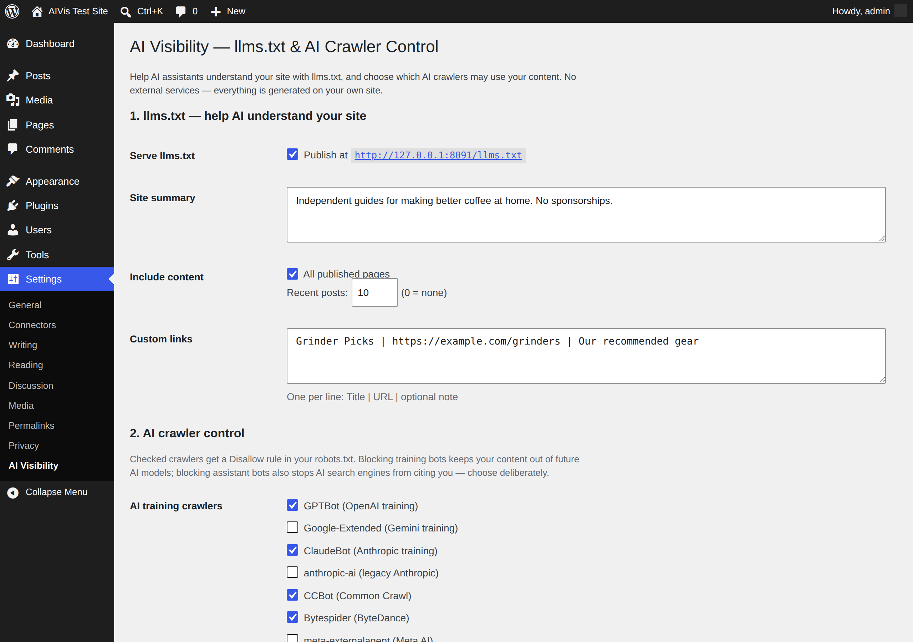

AI Visibility
AI assistants are becoming how people find websites — and AI crawlers are how your content ends up in their training data. AI Visibility puts you in charge of both: publish an llms.txt so assistants understand your site, and decide exactly which AI crawlers may use your content.

Free, on WordPress.org
llms.txt in one click
A clean, spec-following llms.txt built from your real pages and posts — with live preview and 12-hour caching.
Control 23 AI crawlers
GPTBot, ClaudeBot, CCBot, Bytespider and more — grouped by purpose (training vs. assistants) so you block deliberately, not blindly.
noai meta tag
Adds "noai, noimageai" robots meta for crawlers that respect it.
Nothing leaves your site
No external services, no accounts, no telemetry. Everything is generated by your own WordPress.
Pro — one-time purchase
llms-full.txt
Your full content as clean Markdown, so AI assistants can cite you accurately.
Per-post exclusion
A checkbox on every post and page: keep member content and drafts out of AI files.
One-time $19
No subscription. Install alongside the free plugin and it just works.